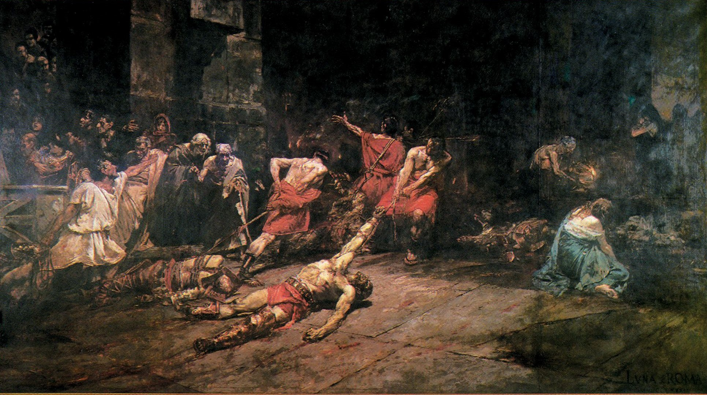

Art is a
record of
time.
Explore the artworks, artists, and historical moments that shaped the visual culture of the Philippines.
EXPLORE THE ARCHIVE

Discover the works.
Discover the stories behind Philippine art across different historical periods.
Spoliarium
Juan Luna, 1884 • Spanish Colonial

Planting Rice
Fernando Amorsolo, 1922 • American Period

The Builders
Victorio Edades, 1928 • Modern

Manunggul Jar
Neolithic Period • Pre-Colonial
Las Virgenes Cristianas
Felix Resurreccion Hidalgo, 1884 • Spanish Colonial
Genesis
Hernando R. Ocampo, 1968 • Modern
Art across eras.
To understand Philippine art, we first need to understand the world surrounding it.
Spanish Colonial
Religious motifs, the introduction of oil painting, and the emergence of the illustrado class.
American Period
The rise of illustration, commercial art, and the idyllic rural landscapes that defined early modernism.
The people behind the art.
Explore the artists whose work reflected, challenged, and shaped Philippine visual culture.

Juan Luna
1857 — 1899
PAINTER
Spanish Colonial

Felix Resurreccion Hidalgo
1855 — 1913
PAINTER
Spanish Colonial

Fernando Amorsolo
1892 — 1972
PAINTER
American Period

Guillermo Tolentino
1890 — 1976
SCULPTOR
American Period